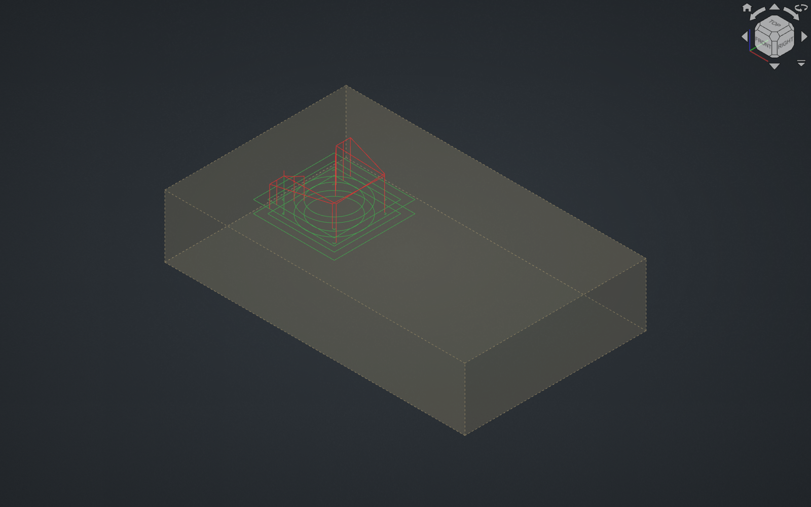
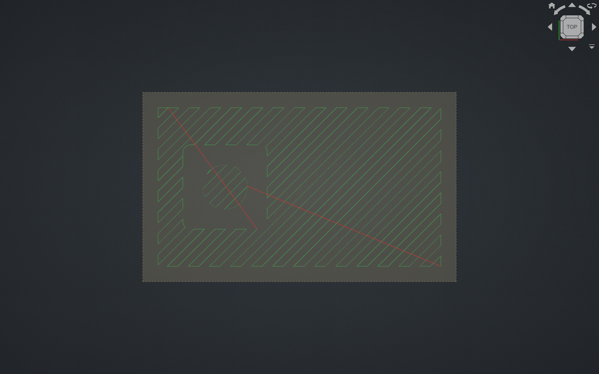

CAM unit tests with the PR applied: Ran 2139 tests · OK (skipped=11, expected failures=4)


NaiveOffset change that was checked against the crash on the issue, and it moves the existing single-point handling below the segment loop.testRestMachining (the test that aborted in #34148).libarea/AreaClipper.cpp (CArea::NaiveOffset): the "curve of one point → circle" block moves from before the segment loop to after it, and its condition changes from curve.m_vertices.size() == 1 to cPos.m_vertices.empty(). A curve made only of zero-length segments (a repeated point, or a pure Z move flattened to XY) now becomes a circle instead of reaching cPos.m_vertices.front() on an empty list. That call was undefined behavior, and it aborts with _GLIBCXX_ASSERTIONS when libstdc++ checks list::front (#34148).App/Area.cpp (ClearedAreaSegmentVisitor::line): a move with no XY travel goes to point() at its lower end instead of becoming a zero-length segment.test_thicken_point and test_thicken_zero_length in TestAreaOperations.| Check | Result |
|---|---|
| Full CAM suite on the PR build (campr) | 2139 ran, OK (11 skipped, 4 expected failures) |
TestAreaOperations, TestPathAdaptive, TestPathOpUtil re-run |
88 ran, all pass; both new tests ran |
| New tests exercise the claim | Yes: [(5,5),(5,5)] thickened by 2 must give one curve of area 4π, which is exactly the empty-cPos path |
| pocket-island-variants (26 Pocket / Profile / MillFace ops) recomputed on the PR | All recompute without errors |
Pocket with Rest Machining after ops that already cleared it (P_Line) |
Empty path (correct) |
MillFace with Rest Machining after the pockets (M_default) |
Skips the cleared pocket, still faces the island top (screenshot) |
Code review (/code-review medium) |
8 findings, none survive (see below) |
Main vs PR toolpaths: not measured. The PR changes only C++, and cam_ab swaps only CAM Python, so both sides would run the same library. This bot session could not build a separate main copy of libarea-native.so / PathApp.so, or run Python probes in FreeCAD. The saved paths in pocket-island-variants differ from the PR's recompute (for example, P_Helix loads as ZigZag). That comes from main's own Python since the file was saved: Pocket's Helix clearing pattern is gone from PocketBase.py and falls back to the first enum. The PR touches no op Python. By the code, the only toolpath effect is in rest machining (Pocket/MillFace "Use Rest Machining" and Adaptive rest machining), through the extra plunge circles below.
No video: there is no GUI change and no toolpath difference I could show side by side.
bbox, not the member (App/Area.cpp:693-699), so the stored box is never widened by the radius. Real, but also on main, and the PR doesn't make it worse: plunges went through the same unwidened box before.len == 0 / sRadius == 0 tests (AreaClipper.cpp:437, 459): unchanged code, also on main.front() call.OpenOffset(-r): wrong. NaiveOffset always receives abs(offset), and single-point curves behaved this way on main already.None.
Area.Offset() / OpenOffset() (Python API) on a curve of only zero-length segments now return a circle instead of hitting undefined behavior, not just Thicken(). (not tested)No properties, enums, panels, defaults or file format change.
_GLIBCXX_ASSERTIONS): not tested on this build. Reproducing it needs a libstdc++ with list::front checks plus -D_GLIBCXX_ASSERTIONS, which this build doesn't have. The NaiveOffset change is the same logic as the patch that cleared the abort under assertions in the earlier repro on the issue. testRestMachining and the new regression test pass here.